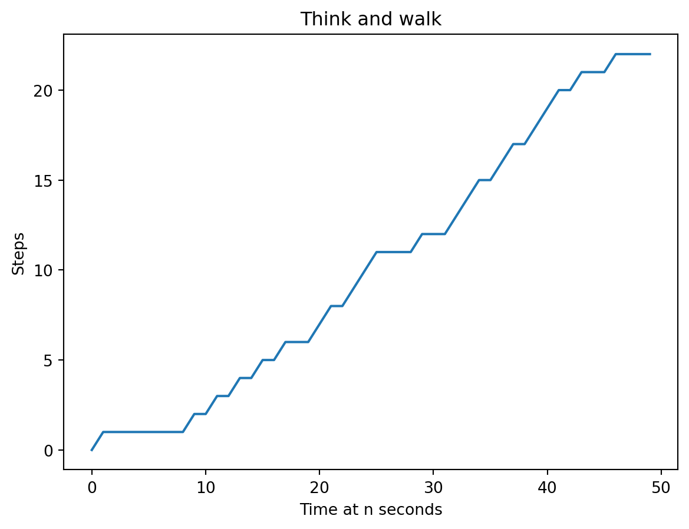
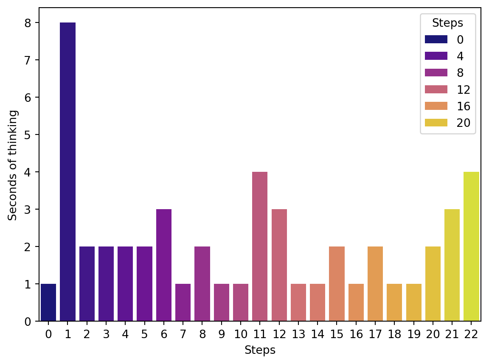
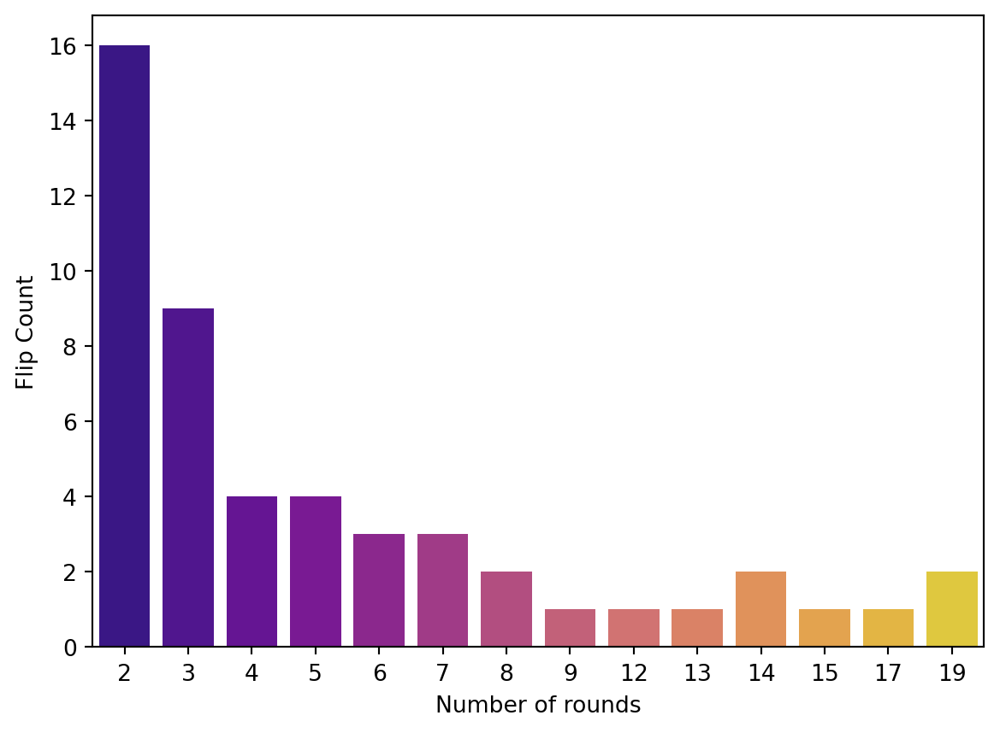
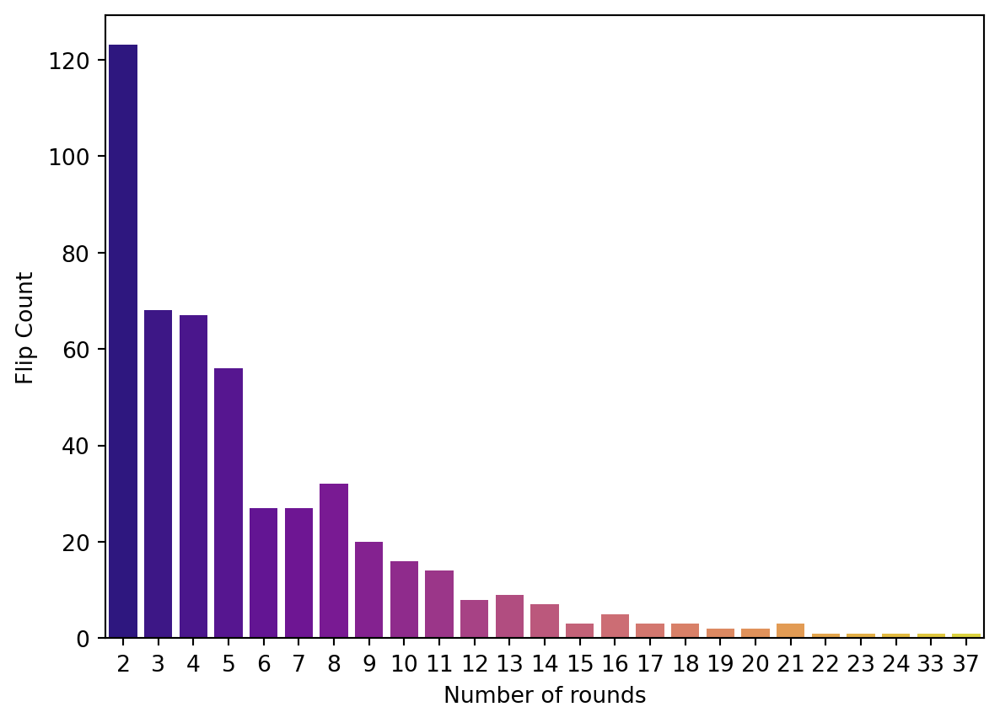

Code
start = 0
x = []
n = 50
p=[0.5,0.5]
for i in range(n):
step = np.random.choice([0,1],p=[0.5,0.5])
start = start + step
x.append(start)Probability theory analyzes random events and quantifies the likelihood of various outcomes. To understand probability theory, first, we need to define some terms:
Sample Space: The set of all possible outcomes of a random experiment. \(\Omega\)
Event: A subset of the sample space. \(E \subset \Omega\)
Probability: A measure of the likelihood that an event will occur, usually expressed as a number between 0 and 1. The probability of an event E denoted \(P(E)\), \(P(E)\le0\) for every E and \(P(\Omega)=1\)
Moreover, we have
Joint Probability: The joint probability of A and B is when event A and B are occurring at the same time, denoted \(P(A, B)\)
Conditional Probability: The probability of event A occurring given that event B has already occurred, denoted \(P(A \mid B)=\frac{P(A, B)}{P(B)}\)
Independence: Two events are independent if the occurrence of one does not affect the probability of occurrence of the other.
Events A and B are independent if \(P(A, B)=P(A)P(B)\)
Events A and B are conditionally independent given C if \(P(A, B\mid C)=P(B \mid A, C)P(A\mid C)=P(B\mid C)P(A \mid C)\)
Random variables are said to be independent and identically distributed (i.i.d.) if they are sampled from the same probability distribution and are mutually independent, for example, coin flips are assumed to be iid.
Random Variable: A variable whose value is subject to variations due to chance.
Discrete Random Variable: Takes on a countable number of distinct values.
Continuous Random Variable: Takes on an uncountable range of values.
A Markov chain is a mathematical system that experiences transitions from one state to another according to certain probabilistic rules. It’s a type of stochastic process that is memoryless, meaning the next state depends only on the current state and not on the sequence of events that preceded it.
\(P(X_n = i_n \mid X_{n-1} = i_{n-1}) = P(X_n = i_n \mid X_0 = i_0, \, X_1 = i_1, \, \dots, \, X_{n-1} = i_{n-1})\)
States: These are the distinct positions or conditions in which the system can exist. A Markov Chain’s set of states is often denoted as \(S\).
Transitions: The movement from one state to another. These transitions are governed by probabilities.
Transition Probability: The probability of moving from one state to another. These probabilities are often represented in a matrix known as the transition matrix.
Transition Matrix: A square matrix where the element at the \(i\)-th row and \(j\)-th column represents the probability of moving from state \(i\) to state \(j\).
Initial State Distribution: A vector that represents the probabilities of starting in each state.
First, let’s take a look at a silly example I made up – Think and walk. In this scenario, whenever you go for a walk, each second, you randomly decide whether to think (and stay still) or to walk (and take one step forward). After n seconds, how many steps would you have taken?
Text(0.5, 1.0, 'Think and walk')
Text(0, 0.5, 'Seconds of thinking')
/tmp/ipykernel_32414/1807100907.py:5: FutureWarning:
Passing `palette` without assigning `hue` is deprecated and will be removed in v0.14.0. Assign the `x` variable to `hue` and set `legend=False` for the same effect.
sns.barplot(x=data_occ.index,y=data_occ['Count'],palette='plasma')Text(0, 0.5, 'Flip Count')
/tmp/ipykernel_32414/3091718681.py:5: FutureWarning:
Passing `palette` without assigning `hue` is deprecated and will be removed in v0.14.0. Assign the `x` variable to `hue` and set `legend=False` for the same effect.
sns.barplot(x=data_occ.index,y=data_occ['Count'],palette='plasma')Text(0, 0.5, 'Flip Count')
---
title: "Probability theory and random variables"
---
## :blue_heart: Probability theory
Probability theory analyzes random events and quantifies the likelihood of various outcomes. To understand probability theory, first, we need to define some terms:
* **Sample Space**: The set of all possible outcomes of a random experiment. $\Omega$
* **Event**: A subset of the sample space. $E \subset \Omega$
* **Probability**: A measure of the likelihood that an event will occur, usually expressed as a number between 0 and 1. The probability of an event E denoted $P(E)$, $P(E)\le0$ for every E and $P(\Omega)=1$
Moreover, we have
* **Joint Probability**: The joint probability of A and B is when event A and B are occurring at the same time, denoted $P(A, B)$
* **Conditional Probability**: The probability of event A occurring given that event B has already occurred, denoted $P(A \mid B)=\frac{P(A, B)}{P(B)}$
* **Independence**: Two events are independent if the occurrence of one does not affect the probability of occurrence of the other.
Events A and B are independent if $P(A, B)=P(A)P(B)$
Events A and B are conditionally independent given C if $P(A, B\mid C)=P(B \mid A, C)P(A\mid C)=P(B\mid C)P(A \mid C)$
## :purple_heart: Random Variables
Random variables are said to be independent and identically
distributed (i.i.d.) if they are sampled from the same probability
distribution and are mutually independent, for example, coin
flips are assumed to be iid.
**Random Variable**: A variable whose value is subject to variations due to chance.
**Discrete Random Variable**: Takes on a countable number of distinct values.
**Continuous Random Variable**: Takes on an uncountable range of values.
## :heart: Markov Chain
A Markov chain is a mathematical system that experiences transitions from one state to another according to certain probabilistic rules. It's a type of stochastic process that is memoryless, meaning the next state depends only on the current state and not on the sequence of events that preceded it.
$P(X_n = i_n \mid X_{n-1} = i_{n-1}) = P(X_n = i_n \mid X_0 = i_0, \, X_1 = i_1, \, \dots, \, X_{n-1} = i_{n-1})$
* **States**: These are the distinct positions or conditions in which the system can exist. A Markov Chain's set of states is often denoted as $S$.
* **Transitions**: The movement from one state to another. These transitions are governed by probabilities.
* **Transition Probability**: The probability of moving from one state to another. These probabilities are often represented in a matrix known as the transition matrix.
* **Transition Matrix**: A square matrix where the element at the $i$-th row and $j$-th column represents the probability of moving from state $i$ to state $j$.
* **Initial State Distribution**: A vector that represents the probabilities of starting in each state.
```{python}
#| echo: false
import matplotlib.pyplot as plt
import numpy as np
import pandas as pd
import seaborn as sns
np.random.seed(1)
```
First, let's take a look at a silly example I made up -- Think and walk.
In this scenario, whenever you go for a walk, each second, you randomly decide whether to think (and stay still) or to walk (and take one step forward). After n seconds, how many steps would you have taken?
```{python}
start = 0
x = []
n = 50
p=[0.5,0.5]
for i in range(n):
step = np.random.choice([0,1],p=[0.5,0.5])
start = start + step
x.append(start)
```
```{python}
plt.plot(x)
plt.xlabel('Time at n seconds',fontsize=10)
plt.ylabel('Steps',fontsize=10)
plt.title("Think and walk")
```
```{python}
data_state = pd.DataFrame({'Steps':x})
data_occ = pd.DataFrame(data_state.value_counts('Steps')).rename(columns={0:'Count'})
data_occ['Count'] = data_occ['count']
sns.barplot(x=data_occ.index,y=data_occ['Count'],palette='plasma', hue=data_occ.index)
plt.ylabel('Seconds of thinking')
```
### What is the expected number of coin flips for getting two consecutive heads?
```{python}
from random import random
def coin_chain(n):
x = []
for i in range(n):
count = 0
steps = 0
while count < 2:
steps += 1
if random() < 0.5:
count += 1
else:
count = 0
x.append(steps)
return x
```
```{python}
x = coin_chain(50)
data_state = pd.DataFrame({'Number of rounds':x})
data_occ = pd.DataFrame(data_state.value_counts('Number of rounds')).rename(columns={0:'Count'})
data_occ['Count'] = data_occ['count']
sns.barplot(x=data_occ.index,y=data_occ['Count'],palette='plasma')
plt.ylabel('Flip Count')
```
```{python}
np.mean(x)
```
```{python}
x = coin_chain(500)
data_state = pd.DataFrame({'Number of rounds':x})
data_occ = pd.DataFrame(data_state.value_counts('Number of rounds')).rename(columns={0:'Count'})
data_occ['Count'] = data_occ['count']
sns.barplot(x=data_occ.index,y=data_occ['Count'],palette='plasma')
plt.ylabel('Flip Count')
```
```{python}
np.mean(x)
```